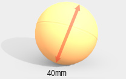

To be able to calculate how many ping pong balls can fit into a school bus to any degree of accuracy, the size of a ping-pong ball must first be determined.
According to the international rules of ping-pong (or table tennis), a ping-pong ball must be 40mm in diameter and weigh 2.7 grams. Until recently, ping-pong balls were 38mm in diameter and have since changed to 40mm. For the purpose of this question, it is assumed that the ping-pong balls used are 40mm in diameter.
This means that the volume of each ball based off the formula 4⁄3πr3, will be ~= 33.51032cm3 (to 5dp).
To successfully calculate an upper bounds to the problem, a stacking configuration that yields the highest density of ping-pong balls in a given space must be found.
In geometry, this problem is described as Close-packing of equal spheres. There are two types of lattice arrangements that can achieve the highest possible density, FCC (Cubic Close Packed) & HCP (Hexagonal Close Packed). Carl Friedrich Gauss proved that the highest average density (the greatest fraction of space occupied by spheres) achieved by a regular lattice arrangement is roughly equal to 0.74048.
So for example, in a box with a volume of 1m3, the most space possible to be taken up by ping-pong balls (assuming there is no loss because of incomplete lattice rows) would be 740,480cm3. This means that at most, 22,097 ping-pong balls could fit.
Finally, the volume of the space to be filled with ping-pong balls must be calculated.
In the United States, there typically 4 different types of school buses. Types, A,B,C and D. Type C is considered to be a "conventional" school bus and so for the purpose of this problem, Type C can be considered "average".
Buses in this class were found to have inner capacities of around 10.7m length, 2.3m width and 2m height. This puts the inner volume of an average school bus at 49.22m3.
To accurately determine how many ping pong balls would fit inside a school bus of this size, the volumes of the interior objects, like seats, steering wheels, doors and even people would need to be considered. Not only that, but also how these different objects would interrupt the lattice arrangement of the ping-pong balls and cause loss of space. Calculating a value for this loss of space is outside the scope of this investigation and so this value will be ignored.
Based on the value of how many ping-pong balls could fit into a cubic meter which was found to be 22,097, the number of ping-pong balls that could fit inside an "average" school bus is (22,097 * 49.22) which equals 1,087,618 total ping-pong balls!